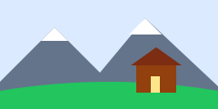

Free Chrome extension · Open source · No data collected
See the web through other people's eyes.
A11y X-Ray simulates color blindness, blurry vision, hand tremor, dyslexia and screen readers on any website, then audits it for the barriers you just felt.
1.3 billion people, about 1 in 6, live with a significant disability (WHO, 2023). Most websites are built without them in mind.
Live demo
Try it right here, no install needed
This sample booking page has a few common mistakes hidden in it. Turn on a simulation, then run the audit to find them.
Find your next stay
Over 2 million homes, hotels and more.

↑ A deliberately flawed sample page. Simulations only affect this box.
Run the audit to see what's wrong with this page, and why it matters.
Features
Feel the barrier first. Then fix it.
4 types of color blindness
Red-, green- and blue-blindness plus total color blindness, using the Machado (2009) color science model.
Low vision
Adjustable blur and contrast loss, and tunnel vision that only shows the area around your mouse.
Hand tremor
Your cursor shakes and clicks land where it shakes to. Small buttons suddenly become very hard to hit.
Dyslexia
Letters inside words keep moving around, like many people with dyslexia describe reading.
Screen reader view
The page as a blind user hears it, in order, with read-aloud and a "hide the screen" mode.
Accessibility audit
19 WCAG 2.2 checks with a score, plain-English fixes and click-to-highlight on the page.
Shareable report
Copy the audit as Markdown and paste it into a GitHub issue, Jira ticket or Slack.
100% private
Runs only on the tab you click it on. No servers, no tracking, no data leaves your browser.
How it works
Built with zero dependencies
Color blindness: real color science
Each type is a 3×3 matrix from Machado, Oliveira & Fernandes (2009), applied in linear RGB through an SVG feColorMatrix filter.
Filters that leave the tool sharp
Effects go on a transparent full-screen layer using backdrop-filter, so the page changes but the extension's own panels stay readable.
Audit: WCAG 2.2 rules
Contrast uses the WCAG luminance formula, with text blended over its real background. Button and link names follow the W3C accessible name algorithm (simplified).
Manifest V3, minimal permissions
Only activeTab, scripting and storage. The extension can't see any page until you click it.
Install
Install in under a minute
Free and open source. Works in Chrome, Edge, Brave and other Chromium browsers.
- 1
Download
Download the ZIP and unzip it.
- 2
Open extensions
Go to
chrome://extensionsand switch on Developer mode (top right). - 3
Load it
Click Load unpacked and choose the
extensionfolder inside the download. - 4
Pin and play
Pin A11y X-Ray from the 🧩 menu, open any website and click the icon.